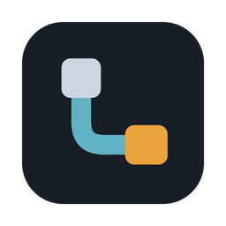

Lepons
Manage AI coding work on your PC and remote servers in one window. Split the screen for AI sessions, terminals and files, share code between computers, manage AI sign-ins and answer from your phone.
Free · Windows 10/11 · macOS (Apple Silicon) · from the latest release pageEvery machine's agents in one window
- Open Claude Code, Codex, Grok, Antigravity or Cursor in any folder, on this PC or on a VM or server over SSH.
- Up to eight panes; each gathers one project's sessions, terminals and files as tabs. Files on remote machines can be edited in place.
- Nothing to install remotely; SSH is enough, and sessions run in tmux so they keep going when the connection drops.
Workflow map
- A hub per machine, branching into folders → sessions → subagents.
- Summaries are always visible under each item; click a session for a Goal · Progress · Now · Result card.
- Needs you N in the top bar takes you to each waiting session in turn. Double-click for focus mode on one branch, or turn on Follow to track sessions as they start working or wait.
- Motion only where it means something: running handoffs, working sessions and waiting sessions move; everything else stays still.
Phone app
The Lepons app for iPhone and Android shows this PC's sessions and lets you answer them. Pair with a QR code; everything between the phone and the PC is end-to-end encrypted, so the relay cannot read it. You are notified only when a session waits for input, several at once become one notification, and nothing is sent while you are at the PC.
Installing the Android APK (Lepons-Android-1.0.0.apk on the release page)
- Allow this source: download the APK on the phone and open it; if Android asks you to allow installs from this source, allow it.
- Open: when it has installed, open the Lepons app.
- Pair: scan the QR in ⚙ Settings → Phone app → Connect phone app on the PC, and if both screens show the same six digits press Yes, same on the PC.
The APK's SHA-256 is listed on the release page; compare it with the file you downloaded.
Also
- Usage limits — what is left of your Claude and Codex 5-hour and 7-day limits, as live batteries.
- AI sign-in on remote machines — see each machine's AI install and sign-in state, and sign in remotely without a terminal.
- One-click tmux — press Install tmux on a remote machine without it and Lepons installs it.
- Sharing map — drag a folder onto another computer so its AI tools can read and search the files. They can also delegate work to the computer that owns the folder, where it runs without permission prompts; share only between computers you trust.
- Pet — a duck on the desktop shows which session is waiting for you.
Get started
- Install the latest release. The installers are unsigned, so Windows may need More info → Run anyway and macOS System Settings → Privacy & Security → Open Anyway.
- ＋ Add machine → ＋ Remote machine and enter
user@host. - Click a folder and choose an agent.
The full guide and FAQ are in the README.